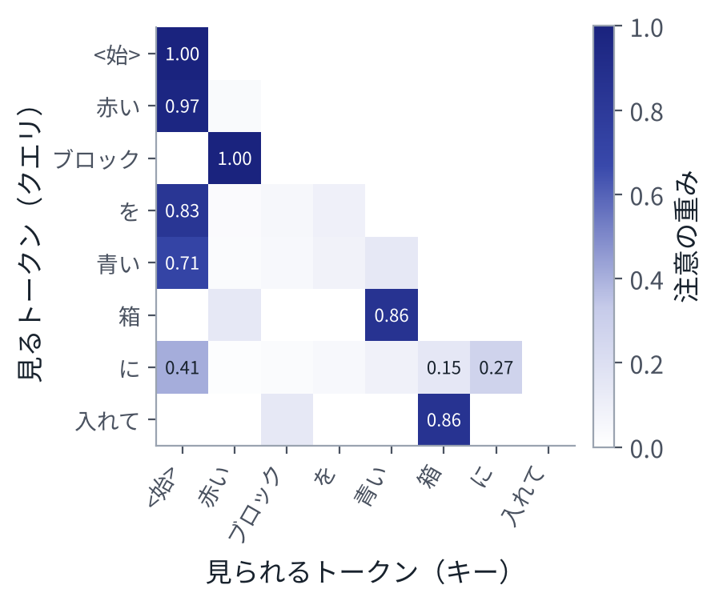

目次
1注意機構：列の中で情報を集める
入力は、\(n\) 個のトークンのベクトルを行に並べた行列 \(X\)（\(n \times d\)）である。各トークンは、列の中のほかのトークンから情報を集めて、自分のベクトルを作り直したい。どのトークンからどれだけ集めるかを、中身から決めるのが注意機構である[1]。
まず、3 つの行列を掛けて、トークンごとに 3 種類のベクトルを作る。
\[ Q = X W_Q,\quad K = X W_K,\quad V = X W_V \]\(Q\) の行（クエリ）は「何を探しているか」、\(K\) の行（キー）は「自分は何か」、\(V\) の行（バリュー）は「渡す中身」と考えるとよい。トークン \(i\) がトークン \(j\) をどれだけ見るかは、クエリ \(q_i\) とキー \(k_j\) の内積で決める。
\[ \mathrm{Attention}(Q, K, V) = \mathrm{softmax}\!\Big(\frac{QK^\top}{\sqrt{d_k}}\Big)\, V \]softmax は行ごとにかける。\(i\) 行目は、トークン \(i\) が各トークンに配る重みで、合計は 1 である。出力の \(i\) 行目は、バリューの重み付き平均になる。\(\sqrt{d_k}\) で割るのは、次元 \(d_k\) が大きいと内積の値が大きくばらつき、softmax がほぼ 0 と 1 に張り付いて、勾配が流れなくなるからである。

この例では重みを手で決めたが、実際のモデルでは \(W_Q, W_K, W_V\) は学習で決まる。「どの単語がどの単語を見ると、次の予測に役立つか」を、データから見つけるのである。
2位置の情報を足す
注意機構の式には、トークンの順番が入っていない。入力の行を並べ替えると、出力の行も同じように並べ替わるだけである（演習 5 の (3) で、差は \(10^{-16}\) 程度）。「赤いブロックと青い箱」と「青いブロックと赤い箱」を区別するには、位置の情報を足す必要がある。
- 位置の埋め込み。位置ごとのベクトル \(p_t\) を用意し、トークンの埋め込みに足す（\(e_t + p_t\)）。ViT（6 章）はこれを使う。
- 回転による位置の表し方（RoPE）。クエリとキーを、位置に比例した角度だけ回転させる。2 つのトークンの内積が、位置の差だけで決まる形になる[2]。いまの多くの言語モデルが使っている。
図 1 の例では、「箱」が「赤い」でなく「青い」を見るように、近いトークンほど少し有利にする項を足した。これを外すと、「箱」は 2 つの色を 0.50 ずつ見て、どちらの色か決められなくなる。
3Transformer のブロック
複数のヘッド。注意機構を、次元を \(h\) 個に分けて並列に \(h\) 回行い、結果をつないで行列 \(W_O\) を掛ける（multi-head attention）。ヘッドごとに違う関係（色と物、物と動詞など）を見られる。
ブロック。注意機構で列の中の情報を混ぜたあと、トークンごとに MLP（3 章）を通す。どちらも、3 章の LayerNorm と残差接続でつなぐ。
\[ \begin{aligned} X &\leftarrow X + \mathrm{MHA}\big(\mathrm{LN}(X)\big)\\ X &\leftarrow X + \mathrm{MLP}\big(\mathrm{LN}(X)\big) \end{aligned} \]MLP は、幅を \(d \to 4d \to d\) と広げてから戻すものがよく使われる。このブロックを \(L\) 個重ねたものが Transformer である。最後に、語彙の数のロジットを出す線形層を付ければ言語モデルになる。
重みの数。1 つのブロックの重みは、注意機構の 4 つの行列で \(4d^2\)、MLP の 2 つの行列で \(8d^2\)、合わせて約 \(12 d^2\) である。GPT-2 の最小の構成（12 層、\(d = 768\)、語彙 50257、位置 1024）に当てはめると、埋め込みも含めて 1 億 2444 万個になる（演習 5 の (5)）。nanoGPT が再現する「GPT-2（124M）」の数と合う[3]。
4因果マスク：学習は並列、推論は逐次
言語モデルでは、トークン \(t\) の予測に、\(t\) より後のトークンを使ってはいけない（答えを見ることになる）。そこで、注意の重みを計算する前に、自分より後ろの位置の値を \(-\infty\) にする。softmax のあと、その重みは 0 になる。これを因果マスクという。
\[ S_{ij} = \begin{cases} q_i^\top k_j / \sqrt{d_k} & (j \le i) \\ -\infty & (j > i) \end{cases} \]演習 5 の (2) では、7 番目より後ろのトークンを入れ替えても、0〜6 番目の出力が 1 ビットも変わらないことを確かめる（マスクを外すと、出力は大きく変わる）。
このマスクのおかげで、学習では、正解の文をまるごと入れ、全部の位置の予測と損失を 1 回の計算で求められる。各位置は、自分より前しか見ていないからである。一方、推論では、出したトークンを次の入力に使うので、1 つずつしか進めない。
推論で毎回すべてを計算し直すと無駄が多い。過去のトークンのキーとバリューは変わらないので、取っておいて使い回す。これを KV キャッシュという。演習 5 の (4) では、KV キャッシュで 1 つずつ出した結果が、全部を一度に計算した結果と一致すること、1000 トークンを出すときの内積の数が約 670 分の 1 になることを確かめる。11 章の π0 は、画像と指示の部分のキャッシュを 1 回だけ作り、行動の計算で使い回す。
5計算量：トークンの数の 2 乗
注意の重みは、トークンの組の数だけある。トークンが \(n\) 個なら、1 層・1 ヘッドで \(n^2\) 個である。
| トークン | 注意の重み（1 層・1 ヘッド） | 例 |
|---|---|---|
| 196 個 | 38,416 個 | 224 画素の画像を 16 画素ずつに切る（6 章） |
| 256 個 | 65,536 個 | 224 画素を 14 画素ずつに切る |
| 1,024 個 | 1,048,576 個 | 448 画素を 14 画素ずつに切る |
| 4,096 個 | 16,777,216 個 | 896 画素を 14 画素ずつに切る |
画像の解像度を 2 倍にするとトークンは 4 倍、注意の計算は 16 倍になる。VLM と VLA で、画像の解像度とカメラの台数が速さを大きく左右するのは、このためである。
6エンコーダとデコーダ
Transformer には、マスクの付け方で 2 つの使い方がある。
- エンコーダ。マスクなし。全部のトークンが全部を見る。入力をよい特徴に変えるのに使う。ViT（6 章）や、CLIP の画像と文のエンコーダ（7 章）がこれである。
- デコーダ。因果マスクあり。次のトークンを当てる言語モデルに使う。
VLM は、画像をエンコーダで特徴にし、それをデコーダの言語モデルに入れる。PaliGemma は、画像と質問の部分はマスクなし、答えの部分は因果マスクという、2 つを混ぜたマスクを使う（8 章）。
7演習
演習 5注意機構の性質を確かめる
学習はしない。乱数の重みで、注意機構の性質を計算して確かめる。1 秒もかからない。
python3 vla_math/ch05_attention.py出力の一部：
(2) 因果マスク: 7 番目より後のトークンを入れ替える
マスクあり: 0〜6 番目の出力の変化の最大値 0.0e+00
マスクなし: 0〜6 番目の出力の変化の最大値 1.2e+00
(3) 位置の情報がないとき、入力の順番を入れ替える
入れ替えた入力の出力 と 出力を同じく入れ替えたもの の差の最大値 5.6e-16
(4) KV キャッシュ（1 つずつ出す場合）
全部を一度に計算した出力との差の最大値 8.9e-16
1000 個を 1 つずつ出すときの、内積の数: キャッシュなし 3.34e+08、あり 5.00e+05（667 倍）
(5) 重みの数と、注意の計算量
1 層あたり 12d² + 13d = 7,087,872 個（d = 768）
12 層、語彙 50257、位置 1024 個のとき、全体で 124,439,808 個
変えてみる：toy_example の \(W_Q\) を書き換えて、「入れて」が「ブロック」のほうを強く見るようにする。位置の項 -0.6 * dist の係数を 0 や −3 にする。
8まとめ
- 注意機構は、クエリとキーの内積の softmax を重みにして、バリューの重み付き平均を取る。どこを見るかを、中身から決める。
- 注意機構だけでは順番がわからないので、位置の情報を足す。
- Transformer は、「注意機構」と「トークンごとの MLP」を、残差接続と LayerNorm でつないで重ねたものである。
- 因果マスクのおかげで、学習は全部の位置を並列に計算でき、推論は 1 つずつ進む。推論は KV キャッシュで速くする。
- 計算量はトークンの数の 2 乗で増える。画像の解像度が効くのはこのためである。
9確かめる問題
- 注意の重みの各行の合計が 1 になるのはなぜか。出力の各行は、何の平均になっているか。
- \(\sqrt{d_k}\) で割らないと、どんな問題が起こるか。
- 因果マスクがあると、学習で全部の位置の損失を 1 回で計算できるのはなぜか。
- KV キャッシュで、キーとバリューは使い回せるのに、クエリは使い回さないのはなぜか。
- \(d = 1024\)、24 層の Transformer のブロック部分の重みは、およそ何個か。
10読むもの
※参考文献
- A. Vaswani et al., "Attention Is All You Need," 2017. arXiv:1706.03762
- J. Su et al., "RoFormer: Enhanced Transformer with Rotary Position Embedding," 2021. arXiv:2104.09864
- A. Karpathy, "nanoGPT," GitHub リポジトリ. https://github.com/karpathy/nanoGPT
- S. J. D. Prince, "Understanding Deep Learning," MIT Press, 2023. 本の全文が公開されている。https://udlbook.github.io/udlbook/
- 斎藤康毅『ゼロから作る Deep Learning ❷ 自然言語処理編』オライリー・ジャパン, 2018.
- A. Karpathy, "Neural Networks: Zero to Hero," 動画の講義. https://karpathy.ai/zero-to-hero.html